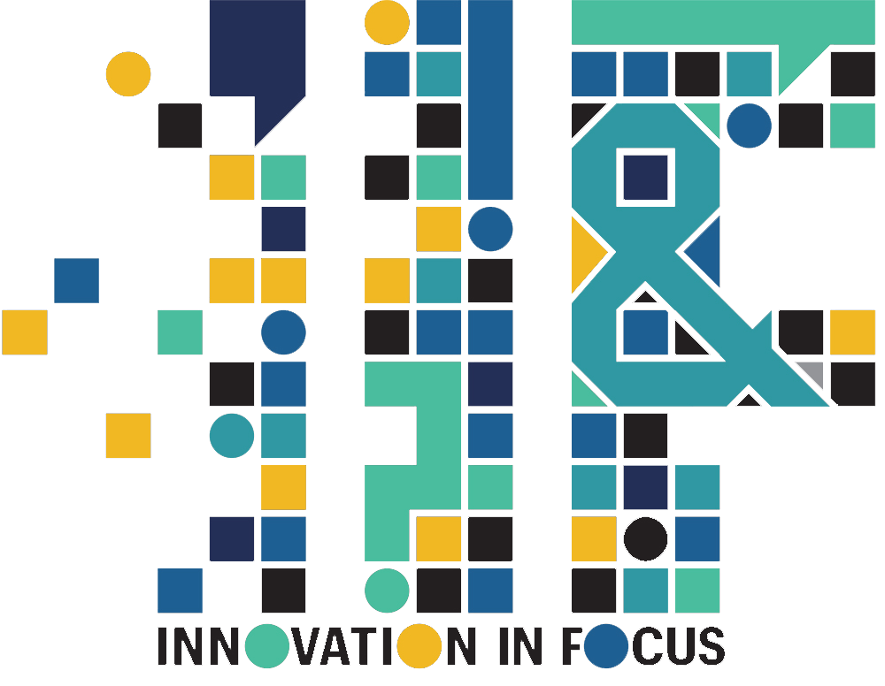
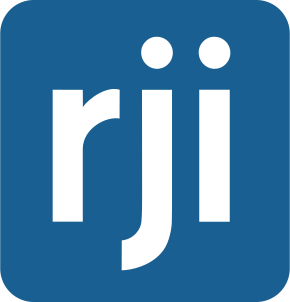
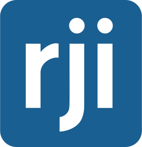

RJI Innovation
Resources, tools and guides


Innovation in Focus is a series experimenting with new tech, tools and methods of storytelling for journalism. We interview experts, test ideas and provide our findings on a different topic each month.
Sign up for the Innovation in Focus Newsletter to get the monthly delivery of experiments in your inbox.

🧰 Partnership projects
💡 Do you have an idea that addresses a current gap, challenge or need in journalism? Pitch your idea for a partnership project with us!